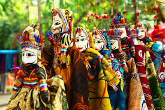

Thank you for visiting our webpage! Please visit again!

The puppet traditions of India are richly diverse and historical. Puppetry is an intricate and colorful folk art that has been handed down the generations.
Puppetry takes many forms in the process of animating objects through human agency. As objects deciphering meanings within a narrative structure and as characters brought alive through artistic brilliance, puppets— within a system of language—operate as agencies of revelation. The earliest reference to puppetry is found in the Tamil classic, Silappadikaaram, written around the 2nd century BC. In the Buddhist work, Therigatha, there are references to various kinds of puppets as also in the Ramayana and the Mahabharata. ‘Sutradhara’ in classical Indian theatre literally means ‘holder of strings’ and refers to the one who introduces and directs the play. Puppet theatre has been in existence in India for thousands of years to entertain and teach people about Hindu religious heroes. Archaeologists at Harappa and Mohenjodaro in the Indus Valley discovered parts of clay dolls with holes for strings, supporting the theory that puppet theatre existed more than 5,000 years ago. Perhaps the origins of puppetry can be dated back to the prehistoric period when Man, living in caves, was enamoured of the dancing shadows cast on the walls by his cooking fires, perceiving himself and his fellow beings, with all their gestures and attempts at communication, replicated visually upon the cave walls. This seems to be the genesis of Man’s efforts to recreate his own likeness.
Images and idols were also used for shamanic rituals, to appease malevolent natural forces. The religious aspects of puppetry developed especially in South India when shadow puppets performed stories and episodes from the epics and the Bhagavat Purana. Puppets have featured in major religious festivals like Shivratri at the Srisailam Temple of Andhra Pradesh as indigenous entertainment. Tolpava Koothu, a puppet play of Kerala, is performed as part of the annual festival in temples of Bhagavati or Bhadrakali in Palghat, Kerala. The sense of sacredness of the puppets could be discerned from the fact that they enacted stories and episodes taken from the epics and the Puranas, and also deriving from local beliefs. Disfigured or torn puppets are never kept along with intact puppets. Once the puppets can no longer be presented to audiences due to excessive wear and tear, after appropriate worship they are either consigned to the river or symbolically cremated.
In some puppet traditions, the marking of eyes on the puppet, which signifies the infusion of life into it, is observed with sacrifices. The puppets are also worshipped on certain religious occasions. As a ritual, puppeteers regularly apply neem or eucalyptus oil on the puppets. This acts as a protective agent against insects and fungus. For the puppeteers, the puppets are not merely theatrical devices to earn a livelihood but revered objects deserving care. In certain puppet traditions of India, the performers fasted before the show and sacrifices were made while putting up posts for the erection of stages. Such proceedings invested the performance of puppets with an aura of mystic ritual. Puppet theatre also serves as a means of spreading religious ethos and beliefs through the enactment of plays with religious themes. Apart from providing entertainment, puppet shows disseminate important ethical lessons, especially through the portrayal of conflict between good and evil and the ultimate victory of the former. While anyone can move a puppet, it needs a skilled puppeteer to lend life to it. In India, puppetry is a living tradition and 18 different forms of puppetry exist, belonging to 11 states.
There are mainly four genres of puppetry commonly found—shadow puppets, rod puppets, string puppets and glove puppets. Shadow puppets are onedimensional—flat cut-outs of paper or leather that are projected against a tightly stretched white cloth screen so that the audience sees the shadow of the puppet on this screen. Shadow puppets are found in Andhra Pradesh, Karnataka, Kerala, Maharashtra, Odisha and Tamil Nadu. Glove puppets are also known as hand puppets. In this form, the puppeteer wears the puppet like a glove and fits his fingers into the hollow head of the puppet and controls its movements. This form of puppetry is found commonly in Kerala, Uttar Pradesh, Odisha and West Bengal. The rod puppets, often larger than glove puppets, are supported and controlled by rods of various types and sizes. Rod puppets are commonly found in Jharkhand, Odisha and West Bengal.
String puppets are also known as marionettes, where the body parts of the puppets are connected through strings which are used to control their movement. This form of puppetry is prevalent in Andhra Pradesh, Assam, Manipur, Karnataka, Maharashtra, Rajasthan, Odisha, Tamil Nadu and West Bengal. While Rajasthani puppets—Kathputli—seem to be omnipresent, other forms are equally colourful!

This brings back memories of when I was a kid. My school fests always had these puppet shows and I remember fighting friends for the front row. Didn't know puppetry had such a deep history.Thank you for the information!